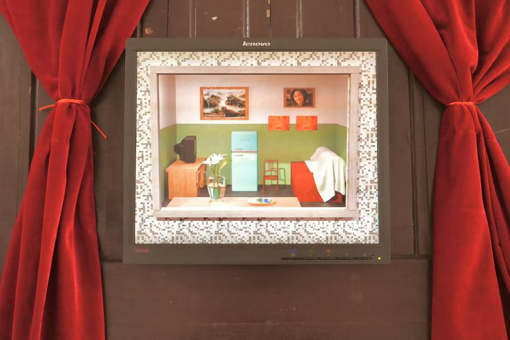
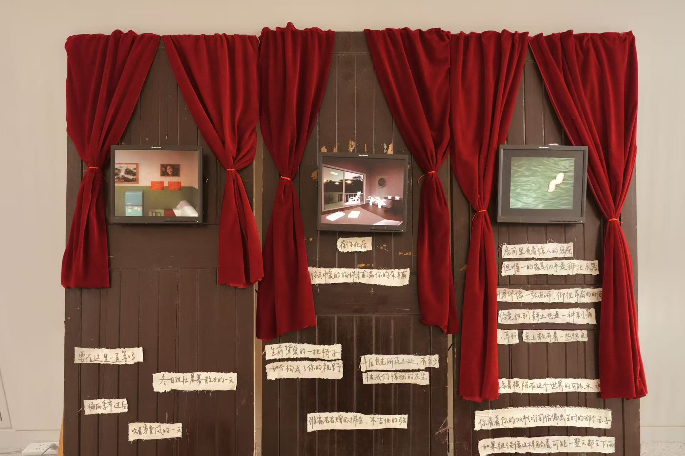
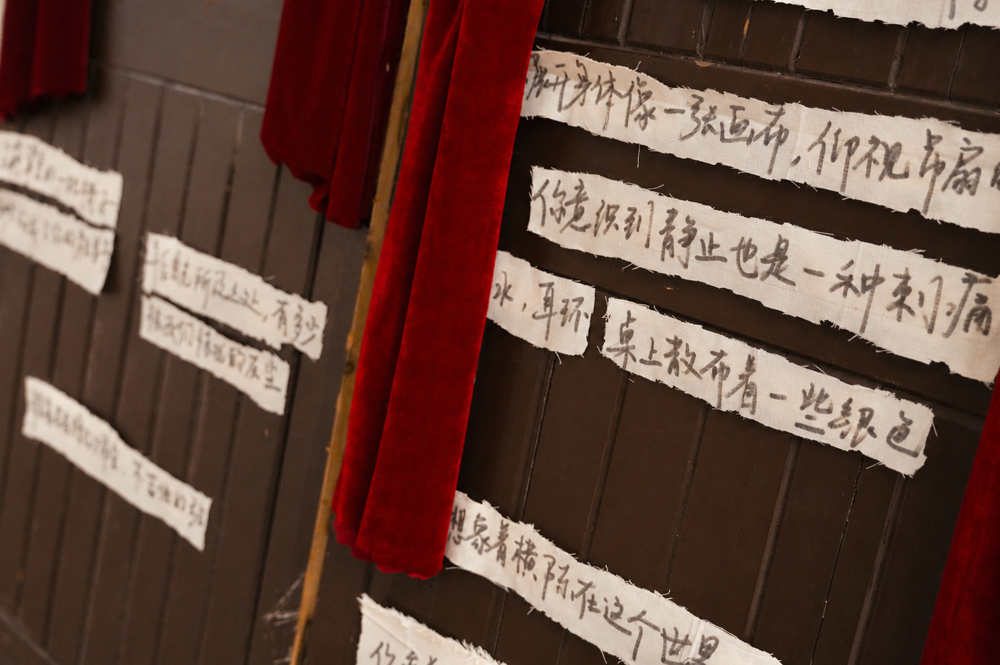

Lullaby 醒在此地
An interactive installation exploring themes of death, memory, and legacy.
2025 Fall

Lullaby is an multimedia narrative installation combining digital film, material, and poems. It investigates how individuals living in contemporary China understand and imagine their own death, memory, and legacy across generational, gendered, and social differences. The project approaches death as a social and cultural phenomenon shaped by changing family structures, migration, digital life, and intergenerational values.
Using interviews and creative research methods, the project analyzes how participants describe their “closing scene” — the relationships, objects, spaces, and emotions they associate with dying and remembrance. The research findings will be translated into an interactive multimedia artwork, allowing audiences to engage with the social meanings participants attach to mortality. The goal is to generate qualitative insight into how contemporary Chinese individuals negotiate mortality, memory, and belonging during a period of rapid social transformation.



